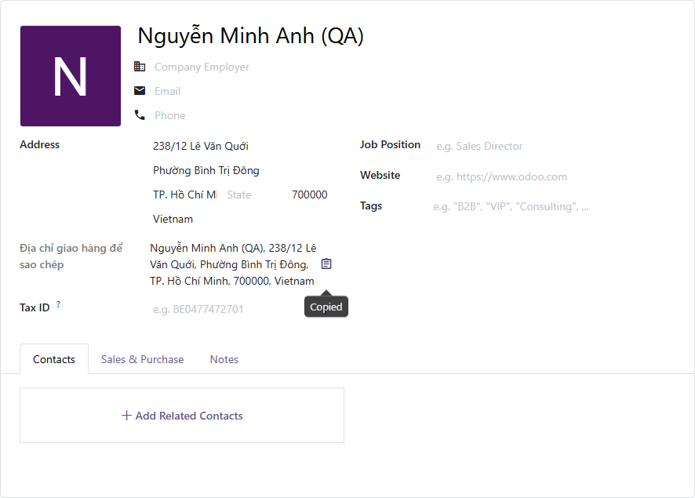
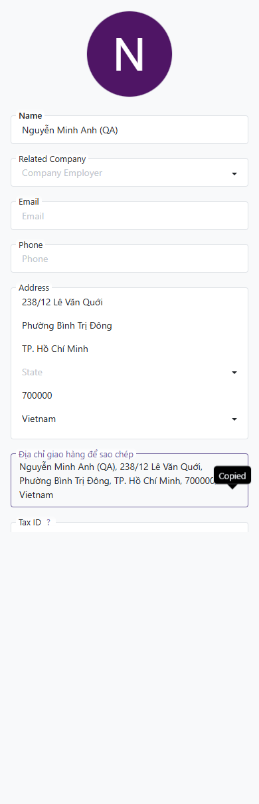
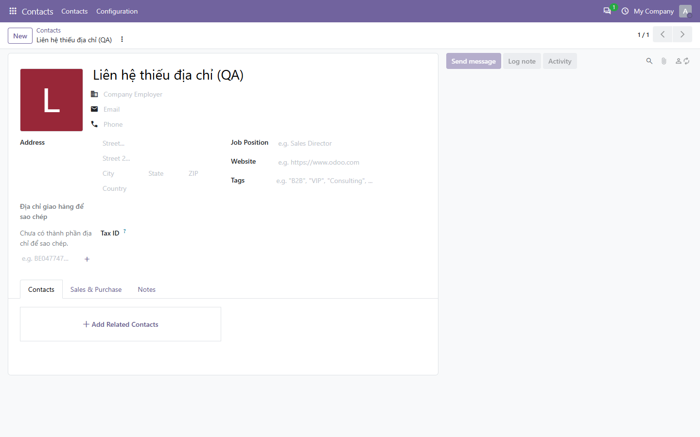

Copy a contact's delivery address as one line from the Contacts form in Odoo 20 Community.
The displayed line includes available name, street, street 2, city, state, ZIP, and country values in that order. Empty values are skipped. A contact with no address components shows a clear message instead of a copy button.
Actual screenshots from a disposable Odoo 20 Community QA database with synthetic data:



Free. LGPL-3. Requires Contacts. Support: info@erpcloud.vn.